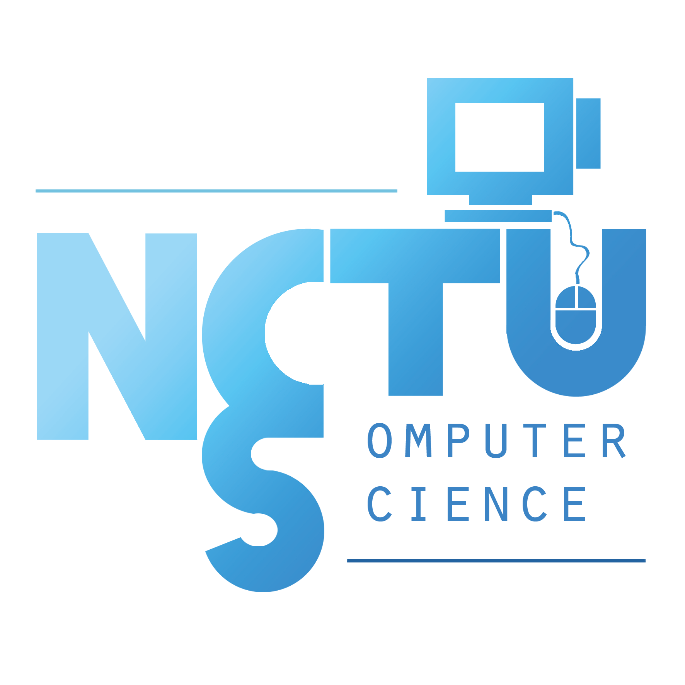

簡介
國立交通大學（NCTU）資訊工程學系，現為國立陽明交通大學（NYCU）的一部分，是台灣頂尖的資訊教育與研究機構之一。該系成立於1972年，長期以來以其卓越的學術成就與創新精神享有盛名。
該系提供完整的課程規劃，涵蓋演算法、資料結構、計算機架構、軟體工程和人工智慧等核心領域，並開設機器學習、雲端運算和資安等新興領域的專業課程，讓學生能夠掌握最新的知識與技能。
交大資訊工程學系重視理論基礎與實務應用並重，學生可以使用最先進的研究設備與運算資源，並有機會與教授一同參與研究專案。系上與業界保持密切聯繫，為學生提供實習機會、合作專案及交流平台，幫助學生在科技領域開創成功的職業生涯。
該系的畢業生深受台灣及全球頂尖企業的青睞，許多人選擇進入頂尖研究所繼續深造，或投身於軟體開發、資料科學和硬體設計等多元領域，展開職業生涯。
系所位於新竹這個高科技重鎮，受益於鄰近台灣蓬勃發展的半導體與科技產業，是學生接觸最新技術發展與產業趨勢的理想場所。